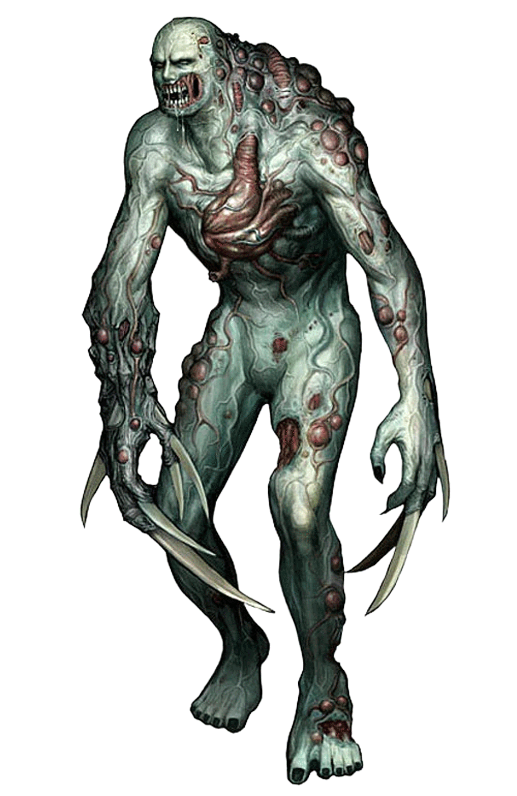

UMBRELLA CORPORATION - CLASSIFIED RESEARCH FILE
FILE ID: BOW-004 | CLEARANCE LEVEL: 8

SUBJECT: T-547 | STATUS: ACTIVE
Bio-Organic Weapon (BOW) — Type A: Tyrant Class
T-Virus (High Concentration)
CRITICAL
The Tyrant represents the pinnacle of T-Virus BOW engineering. Subjects are human hosts selected for rare genetic compatibility with high concentration T-Virus strains. Mutation produces extreme physical enhancement — increased height, reinforced bone structure, and a exposed oversized cardiac organ that functions as a secondary combat weapon. Retains rudimentary directive-following capability.
Concentrated fire to the exposed cardiac organ. Subject enters an uncontrolled "Super Tyrant" mutation state when critically damaged — at this stage conventional weapons are insufficient. Deployment of heavy ordinance is authorized and required.
Tyrant production remains limited by the extreme rarity of compatible human hosts — less than one in ten million individuals carry the necessary genetic markers. Current production yield is critically low. The Super Tyrant mutation remains an unresolved risk. Spencer has authorized continued research into stabilizing the final mutation phase to produce a fully controllable apex BOW.